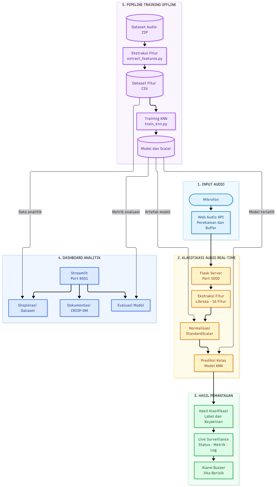

01 - Diagram Arsitektur Sistem (System Architecture Diagram)#
Dokumen ini menjelaskan arsitektur fisik dan logis dari sistem Audio Classification. Arsitektur ini dirancang menggunakan pendekatan Dual-Engine Deployment terpadu, di mana subsistem inferensi real-time berkecepatan tinggi dipisahkan namun terintegrasi secara mulus dengan subsistem analitik dan pemantauan data.
1. Diagram Arsitektur Tingkat Tinggi (High-Level Architecture)#
Berikut adalah representasi arsitektur sistem menggunakan diagram Mermaid:

2. Rincian Lapisan Arsitektur (Architectural Layers)#
A. Lapisan Klien (Client Layer)#
Berjalan sepenuhnya di peramban web (client-side browser) menggunakan standar HTML5 dan Web Audio API:
AudioContext (Sample Rate: 22.050 Hz): Membuka akses mikrofon pengguna secara kontinu melalui
navigator.mediaDevices.getUserMedia.AnalyserNode & HTML5 Canvas: Menghitung representasi domain waktu secara real-time melalui
getByteTimeDomainDatauntuk dirender ke kanvas osiloskop dengan latensi < 16 ms (60 fps).ScriptProcessorNode (Buffer Chunking): Mengumpulkan sampel suara ke dalam array
Float32Arrayper jendela waktu (default 3.0 detik = 66.150 nilai amplitudo). Ketika ukuran chunk terpenuhi, data dikirim sebagai raw binary stream melalui HTTP POST ke backend.Web Audio Oscillator (Synthesized Buzzer): Pembangkit alarm suara lokal menggunakan osilator tipe sawtooth yang bertransisi cepat dari 900 Hz ke 450 Hz dalam 0.25 detik. Alarm ini berbunyi otomatis tanpa membutuhkan pemuatan berkas MP3 eksternal, sehingga tidak terjadi latensi network I/O.
B. Lapisan Layanan & Inferensi (Backend Services Layer)#
Terdiri dari dua subsistem Python yang saling bersinergi:
Live Audio Server (
live_server.py) — Port 5000:Berbasis micro-framework Flask.
Endpoint
GET /: Melayani antarmuka pengawasan tunggal yang cepat dan ringan.Endpoint
POST /api/classify_pcm: Menerima payload binerFloat32Array, membaca data dengannp.frombuffer, mengekstrak 16 fitur audio melalui fungsi Digital Signal Processinglibrosa, menormalkan nilai menggunakanscaler.transform(), dan mengklasifikasikan kelas menggunakanknn_model.predict().
Dashboard Controller (
app.py) — Port 8501:Berbasis framework Streamlit.
Fungsi
ensure_live_server()melakukan handshake socket TCP ke port 5000; jika belum aktif, skrip akan meluncurkanlive_server.pysecara otomatis di latar belakang (background process viasubprocess.Popen).Menyediakan navigasi 4 halaman:
Live Audio Classifier (menyematkan
http://localhost:5000via iframe).Eksplorasi Dataset 16 Fitur (filter interaktif, ringkasan statistik, dan unduh data CSV).
Kinerja & Evaluasi Model KNN (metrik pengujian, kurva ROC, confusion matrix, analisis \(K\)).
Metodologi CRISP-DM (dokumentasi ilmiah proyek).
C. Lapisan Pipeline Offline (Training & Feature Extraction)#
Dijalankan oleh pengembang saat membangun atau memperbarui model:
Ekstraksi Fitur Batch (
extract_features.py):Mengekstrak file ZIP dari folder
crawling/ke folderdata/raw/.Mengambil 16 fitur akustik per berkas suara dan menyimpannya ke
crawling/audio_features_16.csv.
Pelatihan Model KNN (
train_knn.py):Membagi data 80:20 secara terstratifikasi (stratified train-test split).
Menjalankan hyperparameter tuning dengan 5-Fold Stratified Cross-Validation (
GridSearchCV).Menghasilkan dan menyimpan visualisasi ke
images/serta mengekspor artefak model kemodels/.
D. Lapisan Penyimpanan Data & Artefak (Data Storage Layer)#
Model & Scaler: Serialisasi objek Python menggunakan pustaka
joblib(knn_model.pkl,scaler.pkl,label_encoder.pkl).Metadata: Menyimpan konfigurasi hyperparameter dan riwayat evaluasi dalam format terstruktur [
model_metadata.json](file:///d:/semester%205/psd/Audio%20Classification/Audio-Classification/models/model_metadata.json).Dataset Tabular: Berkas CSV 16 fitur yang siap dipakai untuk pelatihan tanpa mengulang proses komputasi DSP.